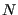
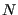

Next: Ensembles Up: Molecular Dynamics Simulation Previous: Radial Distribution Functions and
This Case Study combines elements of Case Studies 5 and 6 in F&S,
which are unfortunately incomplete in their description. The purpose
of this Case Study is to demonstrate how one computes a self-diffusion
coefficient,
 , from an MD simulation of a simple
Lennard-Jones liquid. There are two means to computing
, from an MD simulation of a simple
Lennard-Jones liquid. There are two means to computing
 :
(1) the mean-squared displacement (“MSD”)
, and (2) the velocity autocorrelation function,
. The approaches are equivalent in the sense that the MSD is the integral representation of the VACF; the former is termed the “Einstein” approach, while the latter is the “Green-Kubo” approach [8].
:
(1) the mean-squared displacement (“MSD”)
, and (2) the velocity autocorrelation function,
. The approaches are equivalent in the sense that the MSD is the integral representation of the VACF; the former is termed the “Einstein” approach, while the latter is the “Green-Kubo” approach [8].
The self-diffusion coefficient governs the evolution of concentration,
 , (or number density) according to a generalized transport equation:
, (or number density) according to a generalized transport equation:
| (159) |
| (161) |
“Unfolding” coordinates in a simulation with periodic boundaries
requires that we keep track of how many times each particle has
crossed a boundary. The code mdlj.c allows
output of unfolded coordinates in the trajectory output using the -uf switch on the command line. Now, generally the array rx[] always
contains the periodically shifted coordinates, but we can easily generate
the unfolded coordinates at any time (say, upon output) by
performing the following operation:
rxu = rx[i]+ix[i]*L;
This is because ix[] contains a tally of the number of times periodic crossings in the
The program msd.c computes the MSD from a trajectory with unfolded coordinates using a conventional, straightforward algorithm.
The C-code for this algorithm appears below.  is the number of
“frames” in the trajectory, and  is the number of particles.
is computed by considering the change in
particle position over an interval of size
is the number of
“frames” in the trajectory, and  is the number of particles.
is computed by considering the change in
particle position over an interval of size  . Any frame in the
trajectory can be considered an origin for any interval size, provided
enough frames come after it in the trajectory. This means that we
additionally average over all possible time origins.
. Any frame in the
trajectory can be considered an origin for any interval size, provided
enough frames come after it in the trajectory. This means that we
additionally average over all possible time origins. dt is a
variable that loops over allowed time intervals. cnt[]
counts the number of time origins for a given interval. sd[]
is the array in which we accumulate squared displacement at each time interval, and has  elements, one for each allowed interval.
elements, one for each allowed interval.
/* Compute the mean-squared displacement using
the straightforward algorithm */
fprintf(stdout,"# computing MSD...\n");fflush(stdout);
for (t=begin_frame;t<M;t++) {
for (dt=1;(t+dt)<M;dt++) {
cnt[dt]++; /* number of origins for interval length dt */
for (i=0;i<Traj[0]->N;i++) {
sd[dt] += rij2_unwrapped(Traj[t+dt],i,Traj[t],i,1);
}
}
}
The function rij2_unwrapped(fi,i,fj,j,1) very simply computes the squared displacement between particle i in frame fi and particle j in frame fj:
double rij2_unwrapped ( frametype * fi, int i,
frametype * fj, int j, int com_corr ) {
double dx, dy, dz;
dx=fi->rx[i]-(com_corr?fi->cx:0)-fj->rx[j]+(com_corr?fj->cx:0);
dy=fi->ry[i]-(com_corr?fi->cy:0)-fj->ry[j]+(com_corr?fj->cy:0);
dz=fi->rz[i]-(com_corr?fi->cz:0)-fj->rz[j]+(com_corr?fj->cz:0);
return dx*dx+dy*dy+dz*dz;
}
The parameter com_corr removes the center of mass drift from
the displacement; the center of mass should not move in NVE, but we will use this code for trajectories in which the COM does diffuse. The center of mass of a frame is part of the frametype data type used in msd.c, and it's computed when the frame is read in.
The code fragment below completes the averaging, and outputs the total mean-squared displacement.
fp=fopen(outfile,"w");
fprintf(fp,"# MSD from %s\n",trajfile);
fprintf(fp,"#LABEL time msd\n");
fprintf(fp,"#UNITS %s %s^2\n",time_units,length_units);
for (t=0;t<M-begin_frame;t++) {
sd[t] /= cnt[t]?(Traj[0]->N*cnt[t]):1;
fprintf(fp,"% .5lf % .8lf\n",
t*traj_interval*md_time_step,sd[t]);
}
fclose(fp);
|
|
msd can post-process an unwrapped trajectory file to generate the MSD:
$ ./msd -t traj-rho0.90-rep0.xyz -traj-interval 10 \ -o msd-rho0.90-rep0.dat -begin-frame 1000Repeating this process for several densities and several replicas per density builds a nice dataset. MSD at each density was averaged over replicas and plotted using
plot_msd.py:
$ python ../../../originals/plot_msd.py -i msd-rho0.50-mean.dat \ -i msd-rho0.60-mean.dat -i msd-rho0.70-mean.dat \ -i msd-rho0.80-mean.dat -i msd-rho0.90-mean.dat \ -o msd-rho-T0.70.png -lowt 1 msd-rho0.50-mean.dat 0.18750243355919102 msd-rho0.60-mean.dat 0.17188252756031633 msd-rho0.70-mean.dat 0.11801146782479009 msd-rho0.80-mean.dat 0.08188412712076683 msd-rho0.90-mean.dat 0.0645241901384243The parameter
-lowt is the lower time limit beyond which the data is fit to calculate
You can see that the MSD transitions from a short-time regime where MSD t to a long-time regime where MSD t. That short-time region displays “ballistic” behavior, and on those time scales particles move ballistically (with constant velocity) between collisions with other particles; you can see by the value of MSD of about 0.02 that they are moving only about 0.1 particle diameters or so before colliding. On the longer, “diffusive” timescales, we can see the expected behavior.
to a long-time regime where MSD t. That short-time region displays “ballistic” behavior, and on those time scales particles move ballistically (with constant velocity) between collisions with other particles; you can see by the value of MSD of about 0.02 that they are moving only about 0.1 particle diameters or so before colliding. On the longer, “diffusive” timescales, we can see the expected behavior.
The velocity autocorrelation function route to the diffusion constant
begins with the realization that one can reconstruct the displacement
of a particle over a time interval  by simply integrating its
velocity:
by simply integrating its
velocity:
| (162) |
| (163) | |||
| (164) | |||
| (165) |
In three dimensions, we compute this by computing the components and adding them together, as we did for mean-squared displacement:
| (167) |
/* Compute velocity dot product between particles i and j in
frame fi and fj, respectively; com_corr removes center of
mass motion */
double vij2 ( frametype * fi, int i, frametype * fj, int j,
int com_corr ) {
double dx, dy, dz;
dx=(fi->vx[i]-(com_corr?fi->cvx:0))*(fj->vx[j]-(com_corr?fj->cvx:0));
dy=(fi->vy[i]-(com_corr?fi->cvy:0))*(fj->vy[j]-(com_corr?fj->cvy:0));
dz=(fi->vz[i]-(com_corr?fi->cvz:0))*(fj->vz[j]-(com_corr?fj->cvz:0));
return dx+dy+dz;
}
Fig. 19 shows the VACF for the same simulation we showed for the MSD above.
The right panel is a zoom in by a factor of 20, which allows us to resolve the part of the VACF that dips below zero at short times; this is the same time scale on which we have ballistic motion. The negative VACF indicates “bounce-back” from collisions. That figure was generated using plot_vacf.py, which also applies Eq. 166 using scipy.integrate.simpson() to compute
$ python ../../../originals/plot_vacf.py -i vacf-rho0.50-mean.dat \ -i vacf-rho0.60-mean.dat -i vacf-rho0.70-mean.dat \ -i vacf-rho0.80-mean.dat -i vacf-rho0.90-mean.dat \ -o vacf-rho-T0.70.png -z 20 vacf-rho0.50-mean.dat 0.16226338888888892 vacf-rho0.60-mean.dat 0.16724698888888884 vacf-rho0.70-mean.dat 0.11846137777777778 vacf-rho0.80-mean.dat 0.08435750000000004 vacf-rho0.90-mean.dat 0.0705403444444444These values agree only weakly with the values computed via fitting to MSD, but either is considered “correct”.
|
|
cfa22@drexel.edu